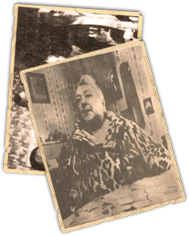

Historia
1936ko estatu kolpea eman zenean, Maritxuren familia, Bidasoa ibaiaren bestaldean erbesteratu zen, Kontxesinea etxean, alegia. 1940ko udan, alemaniar Naziak Hendaiaraino iritsi ostean, Anatol familiaren etxea konfiskatu zuten eta bertan, 15 nazik hartu zuten ostatu. Frantziako Erresistentziak eskaini zion Maritxuri informazio lanak eta iheslariak mugaz bestaldera igarotzeko, honek segituan onartu zuelarik. Jarduera klandestino horietan, bere jarrera adoretsuak lasaitasuna eskaintzen zuen. Ingalaterrako batailan, (airez eman zen lehenengo bataila Bigarren Mundu Gerran) erori ziren pilotu britainiarrei muga gurutzatzen laguntzen zien: “Abenturazale talde bat ginen, pertsona konprometituak. Parisen jasotzen zituen, gaueko trenean dokumentazio faltsuarekin Donibane Lohitzuneraino iristen ziren eta handik, Oiartzungo Sarobe baserrira pasatzen zituen. Hortik Portugalerako bidea eta azkenik, Londres. Guztira, 39 judu eta 113 abiadore pasatu nituen” Comete sarean, bere jokatzeko erarekin zalantzan izan zituzten. Kontrabandoan arazorik gabe aritzen zen, Star pistola txikitxo bat zeraman gainean, honen taldeko batek kontaktuak zituen poliziarekin, Maritxuren kontakturik estimatuenetako bat Gestapoko (Polizia Nazia) agente bat bizi zen etxean hartzen zuen ostatu, etab. Beraz, hori guztia ikusirik, muga gurutzatzeko lanetatik kendu egin zuten eta txanpon-truke lanak enkargutu zizkioten. Baina hiru urte erresistentzian igaro ostean, Gestapok atxilo hartu zuen Maritxu Anatol eta honen taldea, 1943ko uztailaren 13an. Horietariko hiru, Alemaniako Konzentrazio Esparruetara eraman zituzten deportatu gisa, baina Maritxu, Gestapoko Baionako komisaldegitik eta Biarritzeko kartzelatik pasa ostean, askatu egin zuten.
Baionako Gestapoko komisariatik eta Biarritzeko presondegitik pasatu zen, eta galdeketetan tinko jarraitzea lortu zuen eta askatasuna itzuli zioten.
Ebatzi
Nor zen Maritxu Anatol?
Zein urtean jaio zen Maritxu Anatol?
Zer gertatu zen 1940an?
Noiz atxilotu zuten Maritxu Anatol?
Zergatik egin zen ezaguna?
Amaitu duzue
Erantzun guztiak dituzuenean, Game Masterrei deitu eta, zuzenak badira, hurrengo frogara pasatuko zarete!